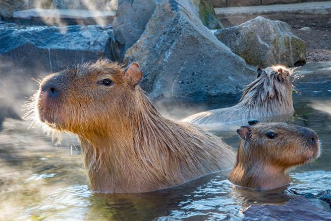
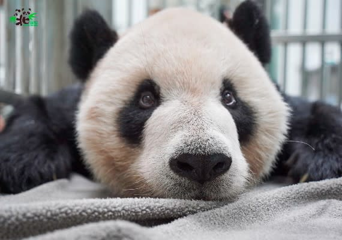
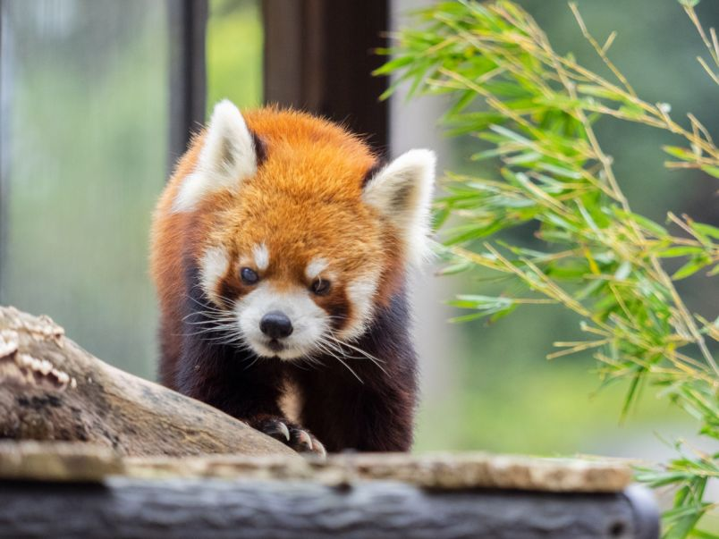
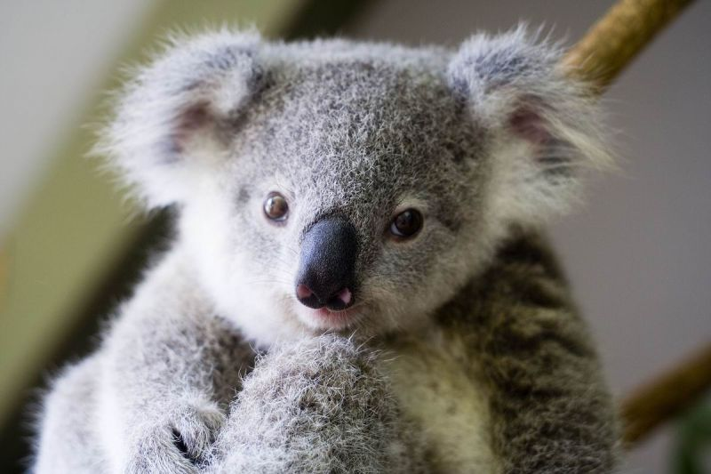

LOGO
主題區1

水豚（Capybara）是水豚屬下僅存的兩種生物之一。 牠是一種半水棲的食草動物，也是世界上體型最大的齧齒類動物。 原產於南美洲除了智利以外的所有稀樹草原和叢林中。

大貓熊，屬於食肉目熊科的一種哺乳動物，體色為黑白兩色。 是中國特有物種，現存的主要棲息地是中國中西部四川盆地周 邊的山區和陝西南部的秦嶺地區。

小貓熊科（學名：Ailuridae）舊作貓熊科，是食肉目下的一科， 目前僅有小貓熊屬（Ailurus）一屬兩種存活。本科的學名「Ailuridae」 便是取自於小貓熊屬的學名「Ailurus」。

無尾熊（Koala）；學名：Phascolarctos cinereus，中國大陸作樹袋熊，香港作樹熊），是澳洲的特有種有袋類動物，全世界僅分布在澳洲的東部昆士蘭州、新南威爾斯、南澳州和維多利亞地區低海拔、不密集的桉樹林中。
水豚（Capybara）是水豚屬下僅存的兩種生物之一。 牠是一種半水棲的食草動物，也是世界上體型最大的齧齒類動物。 原產於南美洲除了智利以外的所有稀樹草原和叢林中。